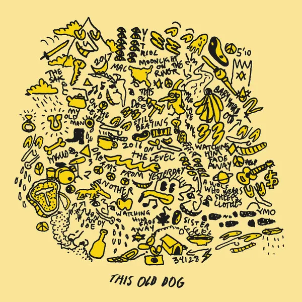
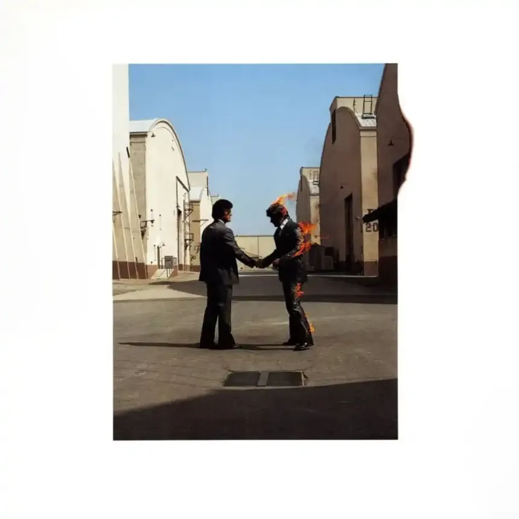
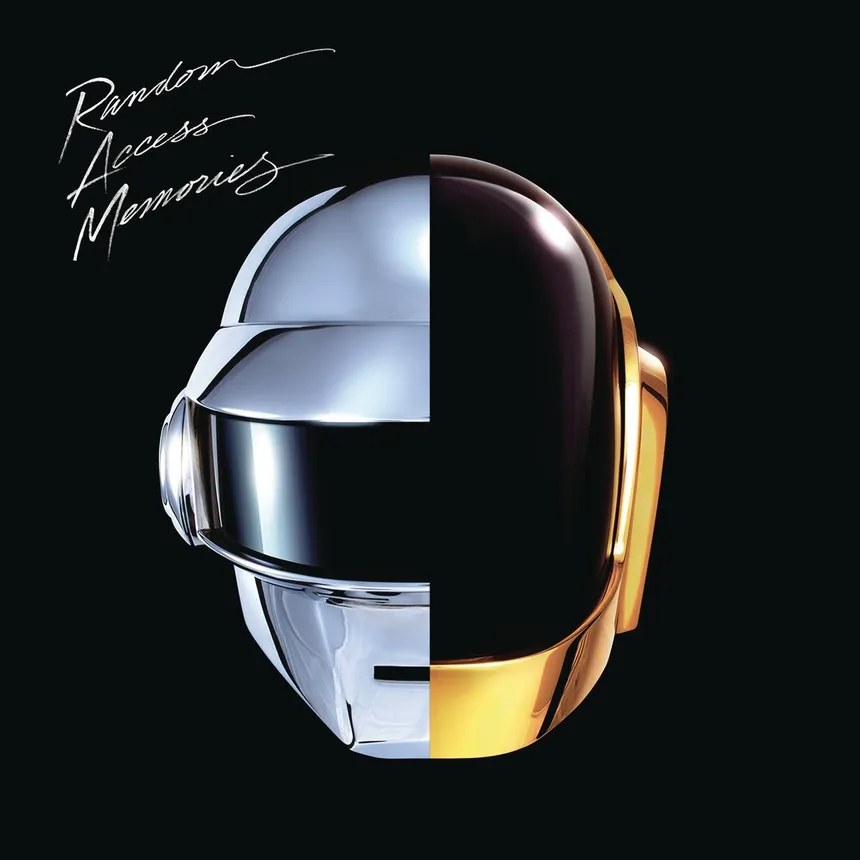
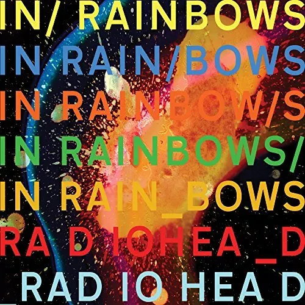
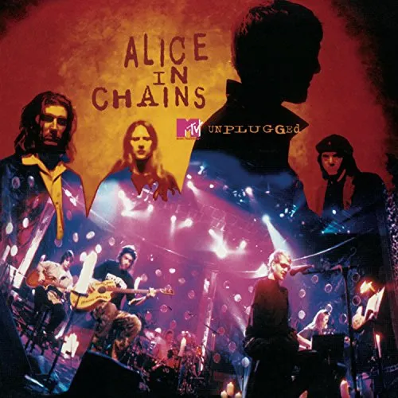
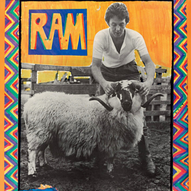
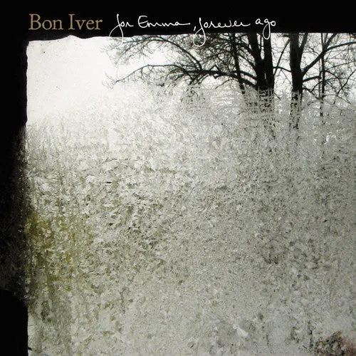
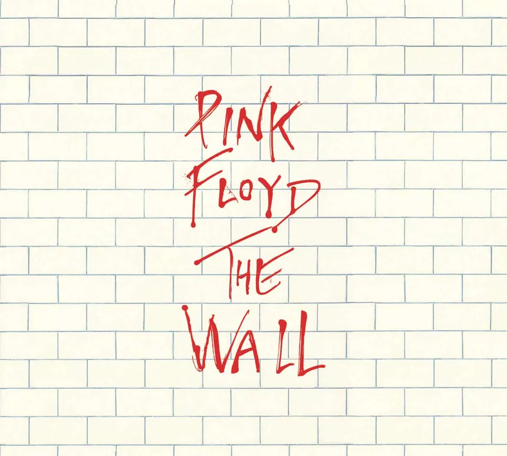

01 Dark Side of the Moon
Pink Floyd / 1973

Timeless. Transcendent. Beautifully Human. One of the greatest albums ever recorded and a masterpiece of progressive / psychedelic rock.
A listening archive, kept by Alex W.
Welcome to the Box of Records!
THE TOP 3
Pink Floyd / 1973
Timeless. Transcendent. Beautifully Human. One of the greatest albums ever recorded and a masterpiece of progressive / psychedelic rock.
Alice in Chains / 1994

A raw, emotional album that deviates from their usual sound.
Daft Punk / 2007

A groundbreaking album that revolutionized electronic music.
Mac DeMarco / 2012

A laid-back, introspective album that captures the essence of indie rock.
Pink Floyd / 1975

A introspective album that explores the pain of separation and the dark side of the music industry.
The Beatles / 1969

An iconic album that showcases the band's evolution and creativity. Arguably their best work.
Daft Punk / 2013

A nostalgic journey through the history of electronic music, blending retro and modern sounds. A poetic statement about clinging to humanity in a world that continues to grow more digital.
Radiohead / 2007

A critically acclaimed album that explores love, loss, and the complexities of human relationships.
Alice in Chains / 1994

A haunting and powerful live album that's a testament to the band's raw talent. Arguably one of the best live performances ever recorded.
Paul McCartney / 1971

A whimsical and fun album from Paul McCartney's solo career. Featuring his signature melodies and vocals from both him and his late wife Linda McCartney.
Bon Iver / 2011

A deeply personal and emotionally resonant album that showcases Bon Iver's unique sound and storytelling.
Pink Floyd / 1979

A concept album that explores several heavy themes through the eyes of a young boy named Pink.